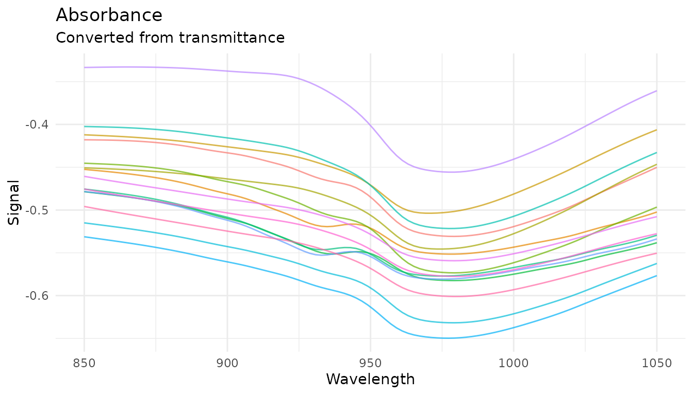
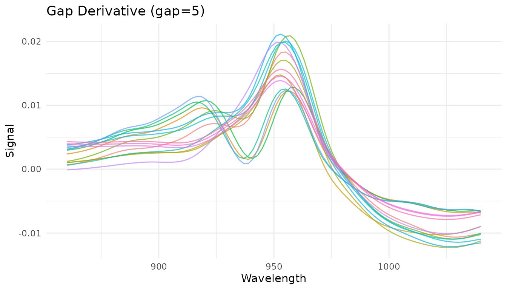
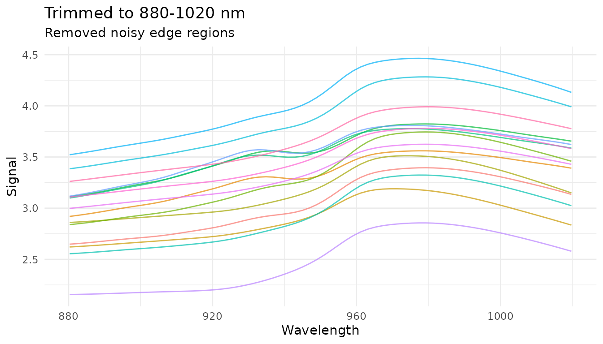
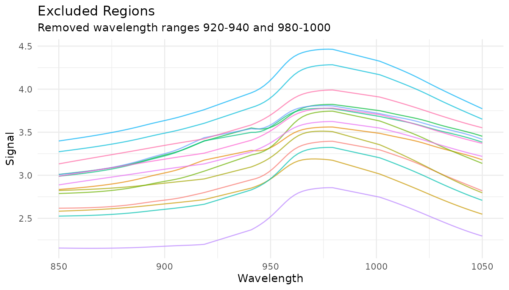
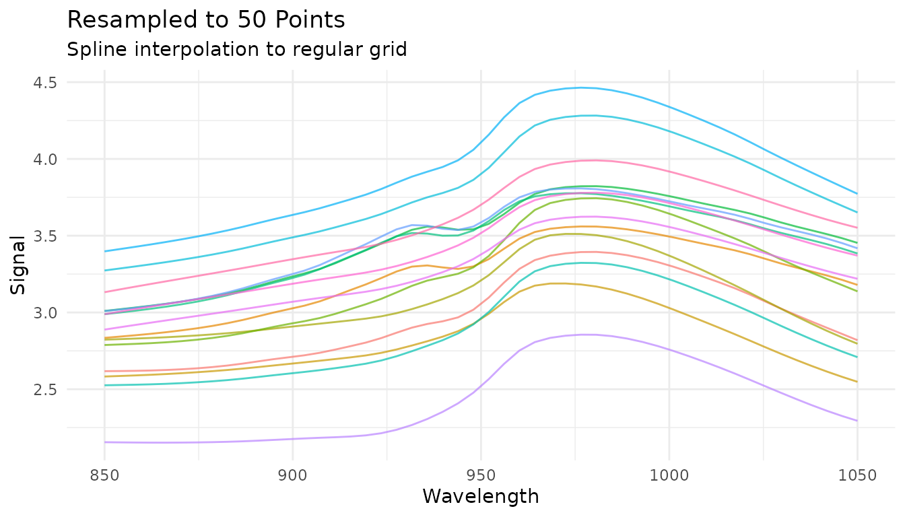
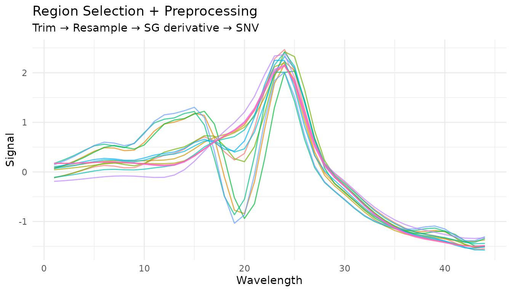
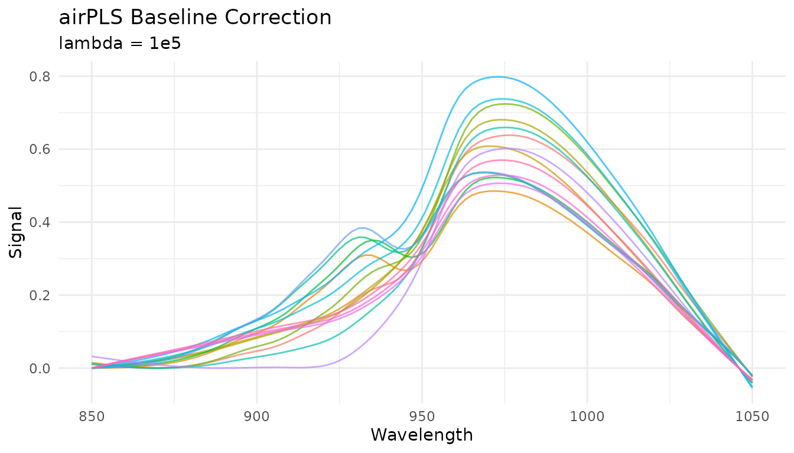

library(measure)
library(recipes)
library(dplyr)
library(tidyr)
library(ggplot2)
library(modeldata)
# Helper function to process and plot spectra
plot_spectra <- function(data, title, subtitle = NULL) {
ggplot(data, aes(x = location, y = value, group = sample_id, color = factor(sample_id))) +
geom_line(alpha = 0.7, linewidth = 0.5) +
labs(x = "Wavelength", y = "Signal", title = title, subtitle = subtitle) +
theme_minimal() +
theme(legend.position = "none")
}
# Prepare sample data
data(meats)
wavelengths <- seq(850, 1050, length.out = 100)
# Get spectra in internal format for demonstrations
get_internal <- function(rec) {
bake(prep(rec), new_data = NULL) |>
slice(1:15) |>
mutate(sample_id = row_number()) |>
unnest(.measures)
}Introduction
Spectral preprocessing is essential for building accurate chemometric models. Raw spectra often contain unwanted variation from physical effects (scatter, baseline drift) that obscure the chemical information we’re trying to model. This vignette covers each preprocessing technique available in measure and when to use them.
Why preprocess spectra?
Before diving into specific techniques, let’s understand what we’re dealing with. Here are raw NIR spectra from the meats dataset:
rec_raw <- recipe(water ~ ., data = meats) |>
step_measure_input_wide(starts_with("x_"), location_values = wavelengths)
raw_data <- get_internal(rec_raw)
plot_spectra(raw_data, "Raw NIR Spectra", "Note the vertical offset differences between samples")
Notice how spectra are shifted vertically relative to each other? This offset isn’t due to chemical differences - it’s caused by physical factors like particle size, path length, and light scatter. Our preprocessing goal is to remove these unwanted effects while preserving the chemical information.
Savitzky-Golay Filtering
What it does
The Savitzky-Golay filter performs polynomial smoothing and can compute derivatives. It fits a polynomial to a sliding window of points, using the polynomial’s value (or derivative) at the center point as the output.
When to use it
- Smoothing (order = 0): Reduce random noise while preserving peak shapes
- First derivative (order = 1): Remove constant baseline offsets, enhance peak differences
- Second derivative (order = 2): Remove linear baseline trends, further enhance peak resolution
Parameters
-
window_side: Number of points on each side of the center point (total window = 2 * window_side + 1) -
differentiation_order: 0 for smoothing, 1 for first derivative, 2 for second derivative -
degree: Polynomial degree (defaults to differentiation_order + 1)
Examples
# Just smoothing
rec_smooth <- recipe(water ~ ., data = meats) |>
step_measure_input_wide(starts_with("x_"), location_values = wavelengths) |>
step_measure_savitzky_golay(window_side = 7, differentiation_order = 0)
# First derivative
rec_d1 <- recipe(water ~ ., data = meats) |>
step_measure_input_wide(starts_with("x_"), location_values = wavelengths) |>
step_measure_savitzky_golay(window_side = 5, differentiation_order = 1)
# Second derivative
rec_d2 <- recipe(water ~ ., data = meats) |>
step_measure_input_wide(starts_with("x_"), location_values = wavelengths) |>
step_measure_savitzky_golay(window_side = 7, differentiation_order = 2)
library(patchwork)
p1 <- plot_spectra(raw_data, "Raw")
p2 <- plot_spectra(get_internal(rec_smooth), "Smoothed (window = 15)")
p3 <- plot_spectra(get_internal(rec_d1), "1st Derivative", "Baseline offset removed")
p4 <- plot_spectra(get_internal(rec_d2), "2nd Derivative", "Linear baseline removed")
(p1 + p2) / (p3 + p4)
Choosing window size
The window size is a bias-variance trade-off: - Smaller window: Less smoothing, preserves sharp features, more noise - Larger window: More smoothing, may blur sharp peaks, less noise
A good starting point is a window that spans the narrowest feature you want to preserve.
windows <- c(3, 7, 15)
window_data <- lapply(windows, function(w) {
rec <- recipe(water ~ ., data = meats) |>
step_measure_input_wide(starts_with("x_"), location_values = wavelengths) |>
step_measure_savitzky_golay(window_side = w, differentiation_order = 1)
get_internal(rec) |>
filter(sample_id == 1) |>
mutate(window = paste0("window_side = ", w))
}) |>
bind_rows()
ggplot(window_data, aes(x = location, y = value, color = window)) +
geom_line() +
labs(
x = "Wavelength",
y = "Signal",
title = "Effect of Window Size on First Derivative",
color = NULL
) +
theme_minimal()
Tuning with dials
The Savitzky-Golay step is tunable! This means you can use
tune() to find optimal parameters:
library(tune)
library(workflows)
rec_tunable <- recipe(water ~ ., data = meats) |>
step_measure_input_wide(starts_with("x_")) |>
step_measure_savitzky_golay(
window_side = tune(),
differentiation_order = tune()
) |>
step_measure_output_wide()
# The tunable parameters are:
tunable(rec_tunable)Spectral Math Transformations
The measure package includes mathematical transformations commonly used in spectroscopy and chemometrics.
Absorbance and Transmittance
Convert between transmittance and absorbance using the Beer-Lambert relationship:
- Absorbance:
- Transmittance:
# Convert transmittance to absorbance
rec_abs <- recipe(water ~ ., data = meats) |>
step_measure_input_wide(starts_with("x_"), location_values = wavelengths) |>
step_measure_absorbance()
plot_spectra(get_internal(rec_abs), "Absorbance", "Converted from transmittance")
These transformations are inverses - a round-trip preserves values:
rec_roundtrip <- recipe(water ~ ., data = meats) |>
step_measure_input_wide(starts_with("x_")) |>
step_measure_absorbance() |>
step_measure_transmittance() # Back to originalLog Transformation
Apply logarithmic transformation with configurable base and offset:
# Natural log (base e)
rec_log <- recipe(water ~ ., data = meats) |>
step_measure_input_wide(starts_with("x_"), location_values = wavelengths) |>
step_measure_log()
# Log base 10 with offset for handling zeros
rec_log10 <- recipe(water ~ ., data = meats) |>
step_measure_input_wide(starts_with("x_"), location_values = wavelengths) |>
step_measure_log(base = 10, offset = 1)
plot_spectra(get_internal(rec_log), "Natural Log Transform")
Kubelka-Munk Transformation
For diffuse reflectance data, the Kubelka-Munk transformation converts reflectance to a quantity proportional to concentration:
# For reflectance data (values between 0 and 1)
rec_km <- recipe(concentration ~ ., data = reflectance_data) |>
step_measure_input_wide(starts_with("r_")) |>
step_measure_kubelka_munk()Simple Finite Difference Derivatives
For quick derivatives without smoothing, use
step_measure_derivative():
# First derivative - removes constant baseline offsets
rec_fd1 <- recipe(water ~ ., data = meats) |>
step_measure_input_wide(starts_with("x_"), location_values = wavelengths) |>
step_measure_derivative(order = 1)
# Second derivative - removes linear baseline trends
rec_fd2 <- recipe(water ~ ., data = meats) |>
step_measure_input_wide(starts_with("x_"), location_values = wavelengths) |>
step_measure_derivative(order = 2)Note: Derivatives reduce spectrum length (first
derivative: n-1 points, second derivative: n-2 points). The
order parameter is tunable.
Gap (Norris-Williams) Derivatives
Gap derivatives compute differences between points separated by a gap, commonly used in NIR chemometrics:
# Gap derivative with gap=5
rec_gap <- recipe(water ~ ., data = meats) |>
step_measure_input_wide(starts_with("x_"), location_values = wavelengths) |>
step_measure_derivative_gap(gap = 5)
# Norris-Williams with segment averaging for noise reduction
rec_nw <- recipe(water ~ ., data = meats) |>
step_measure_input_wide(starts_with("x_"), location_values = wavelengths) |>
step_measure_derivative_gap(gap = 5, segment = 3)
plot_spectra(get_internal(rec_gap), "Gap Derivative (gap=5)")
Both gap and segment parameters are tunable
with dials.
When to use each derivative method
| Method | Smoothing | Speed | Use when |
|---|---|---|---|
step_measure_savitzky_golay() |
Yes (polynomial) | Fast | Noisy data, need smoothing |
step_measure_derivative() |
No | Very fast | Clean data, unsmoothed derivative |
step_measure_derivative_gap() |
Optional (segment) | Fast | NIR chemometrics, configurable gap |
Region Operations
Region operations allow you to select, exclude, or resample specific portions of your measurements. These are essential for chromatographic workflows and useful for focusing analysis on regions of interest.
Trimming to a range
step_measure_trim() keeps only measurements within a
specified x-axis range:
# Keep only wavelengths 880-1020
rec_trim <- recipe(water ~ ., data = meats) |>
step_measure_input_wide(starts_with("x_"), location_values = wavelengths) |>
step_measure_trim(range = c(880, 1020))
trim_data <- get_internal(rec_trim)
plot_spectra(trim_data, "Trimmed to 880-1020 nm",
"Removed noisy edge regions")
Common use cases: - Remove noisy regions at measurement edges - Focus on spectral region of interest - Define integration windows for chromatography
Excluding ranges
step_measure_exclude() removes measurements within one
or more specified ranges:
# Exclude water absorption bands
rec_exclude <- recipe(water ~ ., data = meats) |>
step_measure_input_wide(starts_with("x_"), location_values = wavelengths) |>
step_measure_exclude(ranges = list(c(920, 940), c(980, 1000)))
exclude_data <- get_internal(rec_exclude)
plot_spectra(exclude_data, "Excluded Regions",
"Removed wavelength ranges 920-940 and 980-1000")
Common use cases: - Remove solvent peaks in chromatography - Exclude detector saturation regions - Remove known interference regions
Resampling to a new grid
step_measure_resample() interpolates measurements to a
new regular grid:
# Resample to 50 evenly spaced points
rec_resample <- recipe(water ~ ., data = meats) |>
step_measure_input_wide(starts_with("x_"), location_values = wavelengths) |>
step_measure_resample(n = 50, method = "spline")
resample_data <- get_internal(rec_resample)
plot_spectra(resample_data, "Resampled to 50 Points",
"Spline interpolation to regular grid")
You can also specify the spacing between points:
# Resample with 5 nm spacing
rec_resample_spacing <- recipe(water ~ ., data = meats) |>
step_measure_input_wide(starts_with("x_"), location_values = wavelengths) |>
step_measure_resample(spacing = 5, method = "linear")Common use cases: - Align data from different instruments with different sampling rates - Reduce data density for faster processing - Ensure uniform spacing for methods that require it
Combining region operations
Region operations are often used together at the start of a preprocessing pipeline:
rec_regions <- recipe(water ~ ., data = meats) |>
step_measure_input_wide(starts_with("x_"), location_values = wavelengths) |>
# First trim to region of interest
step_measure_trim(range = c(860, 1040)) |>
# Then resample to regular grid
step_measure_resample(n = 50, method = "spline") |>
# Now apply spectral preprocessing
step_measure_savitzky_golay(window_side = 3, differentiation_order = 1) |>
step_measure_snv()
region_pipeline_data <- get_internal(rec_regions)
plot_spectra(region_pipeline_data, "Region Selection + Preprocessing",
"Trim → Resample → SG derivative → SNV")
Baseline Correction
Baseline correction is critical for removing unwanted background signals from spectral data. The measure package provides several algorithms suited for different situations.
Available methods
| Step | Algorithm | Best for |
|---|---|---|
step_measure_baseline_als() |
Asymmetric Least Squares | General purpose, smooth baselines |
step_measure_baseline_poly() |
Polynomial fitting | Simple, predictable baselines |
step_measure_baseline_rolling() |
Rolling ball | Wide peaks, chromatography |
step_measure_baseline_airpls() |
Adaptive Iteratively Reweighted PLS | Complex baselines |
step_measure_baseline_snip() |
SNIP algorithm | Spectroscopy with sharp peaks |
step_measure_detrend() |
Polynomial detrending | Linear/quadratic drift |
Rolling ball baseline
The rolling ball algorithm “rolls” a ball of specified radius under the spectrum to estimate the baseline:
rec_rolling <- recipe(water ~ ., data = meats) |>
step_measure_input_wide(starts_with("x_"), location_values = wavelengths) |>
step_measure_baseline_rolling(window_size = 50)
rolling_data <- get_internal(rec_rolling)
plot_spectra(rolling_data, "Rolling Ball Baseline Correction",
"Window size = 50")
Key parameters: - window_size: Diameter of the rolling
ball (larger = smoother baseline) - smoothing: Amount of
smoothing applied to the estimated baseline
airPLS baseline
Adaptive Iteratively Reweighted Penalized Least Squares adapts to complex, varying baselines:
rec_airpls <- recipe(water ~ ., data = meats) |>
step_measure_input_wide(starts_with("x_"), location_values = wavelengths) |>
step_measure_baseline_airpls(lambda = 1e5, max_iter = 20)
airpls_data <- get_internal(rec_airpls)
plot_spectra(airpls_data, "airPLS Baseline Correction",
"lambda = 1e5")
The lambda parameter controls smoothness (larger =
smoother baseline) and is tunable with dials.
SNIP baseline
Statistics-sensitive Non-linear Iterative Peak-clipping (SNIP) is well-suited for spectroscopy with sharp peaks:
rec_snip <- recipe(water ~ ., data = meats) |>
step_measure_input_wide(starts_with("x_"), location_values = wavelengths) |>
step_measure_baseline_snip(iterations = 30)
snip_data <- get_internal(rec_snip)
plot_spectra(snip_data, "SNIP Baseline Correction",
"30 iterations, decreasing window")
Key parameters: - iterations: Number of clipping
iterations (more = more aggressive baseline removal) -
decreasing: Whether to decrease window size with iterations
(recommended for peaks)
Standard Normal Variate (SNV)
What it does
SNV normalizes each spectrum independently by centering and scaling:
where is the spectrum’s mean and is its standard deviation.
When to use it
- Remove multiplicative scatter effects
- Correct for path length variations
- Normalize spectra to similar magnitude
SNV is particularly effective for diffuse reflectance spectra where particle size causes scatter variations.
Example
rec_snv <- recipe(water ~ ., data = meats) |>
step_measure_input_wide(starts_with("x_"), location_values = wavelengths) |>
step_measure_snv()
snv_data <- get_internal(rec_snv)
plot_spectra(snv_data, "After SNV Normalization", "Each spectrum has mean = 0 and sd = 1")
Combining with derivatives
SNV is often combined with Savitzky-Golay derivatives. The order matters:
# Derivative then SNV (more common)
rec_d1_snv <- recipe(water ~ ., data = meats) |>
step_measure_input_wide(starts_with("x_"), location_values = wavelengths) |>
step_measure_savitzky_golay(window_side = 5, differentiation_order = 1) |>
step_measure_snv()
plot_spectra(get_internal(rec_d1_snv), "1st Derivative + SNV",
"Combined baseline removal and scatter correction")
Multiplicative Scatter Correction (MSC)
What it does
MSC aligns each spectrum to a reference spectrum (typically the mean of all training spectra) by correcting for additive and multiplicative effects:
- Fit each spectrum to the reference :
- Correct:
When to use it
- Similar applications to SNV
- When you have a good reference spectrum
- Often slightly better than SNV for scatter correction
How it differs from SNV
- SNV: Each spectrum normalized independently (no reference needed)
- MSC: All spectra aligned to a common reference (learns reference during prep)
This means MSC is a trained step - it learns the reference spectrum from training data and applies the same reference to new data.
Example
rec_msc <- recipe(water ~ ., data = meats) |>
step_measure_input_wide(starts_with("x_"), location_values = wavelengths) |>
step_measure_msc()
msc_data <- get_internal(rec_msc)
plot_spectra(msc_data, "After MSC", "Spectra aligned to mean reference")

Sample-wise Normalization
The measure package provides several sample-wise normalization methods that normalize each spectrum independently. Unlike SNV/MSC which address scatter, these methods adjust for differences in total signal intensity.
Available methods
| Step | Formula | Use case |
|---|---|---|
step_measure_normalize_sum() |
Total intensity normalization | |
step_measure_normalize_max() |
Peak-focused analysis | |
step_measure_normalize_range() |
Scale to 0-1 range | |
step_measure_normalize_vector() |
L2/Euclidean normalization | |
step_measure_normalize_auc() |
Chromatography (area under curve) | |
step_measure_normalize_peak() |
Internal standard normalization |
Sum normalization
Divides each spectrum by its total intensity. After transformation, all spectra sum to 1:
rec_norm_sum <- recipe(water ~ ., data = meats) |>
step_measure_input_wide(starts_with("x_"), location_values = wavelengths) |>
step_measure_normalize_sum()
plot_spectra(get_internal(rec_norm_sum), "Sum Normalized",
"Each spectrum sums to 1")
Max normalization
Divides each spectrum by its maximum value, useful for peak-focused analysis:
rec_norm_max <- recipe(water ~ ., data = meats) |>
step_measure_input_wide(starts_with("x_"), location_values = wavelengths) |>
step_measure_normalize_max()
plot_spectra(get_internal(rec_norm_max), "Max Normalized",
"Each spectrum has maximum = 1")
Peak region normalization (tunable)
When you have an internal standard at a known location, use
step_measure_normalize_peak() to normalize by a specific
region:
rec_norm_peak <- recipe(water ~ ., data = meats) |>
step_measure_input_wide(starts_with("x_"), location_values = wavelengths) |>
step_measure_normalize_peak(
location_min = 900,
location_max = 950,
method = "mean" # or "max" or "integral"
)
plot_spectra(get_internal(rec_norm_peak), "Peak Region Normalized",
"Normalized by mean of region 900-950")
The location_min and location_max
parameters are tunable:
rec_tunable_peak <- recipe(water ~ ., data = meats) |>
step_measure_input_wide(starts_with("x_")) |>
step_measure_normalize_peak(
location_min = tune(),
location_max = tune(),
method = "mean"
) |>
step_measure_output_wide()Variable-wise Scaling
While sample-wise methods normalize each spectrum independently, variable-wise scaling operates across samples at each measurement location. These methods learn statistics from training data and apply them consistently to new data.
When to use variable-wise scaling
- Before PCA/PLS: Centering is essential; scaling equalizes variable importance
- When variables have different scales: Auto-scaling gives equal weight to all locations
- For metabolomics data: Pareto scaling is common practice
Mean centering
step_measure_center() subtracts the column mean at each
location:
rec_center <- recipe(water ~ ., data = meats) |>
step_measure_input_wide(starts_with("x_"), location_values = wavelengths) |>
step_measure_center()
center_data <- get_internal(rec_center)
plot_spectra(center_data, "Mean Centered",
"Column means are zero")
Auto-scaling (z-score)
step_measure_scale_auto() centers and scales to unit
variance at each location:
rec_auto <- recipe(water ~ ., data = meats) |>
step_measure_input_wide(starts_with("x_"), location_values = wavelengths) |>
step_measure_scale_auto()
auto_data <- get_internal(rec_auto)
plot_spectra(auto_data, "Auto-Scaled (Z-Score)",
"Column means = 0, SDs = 1")
Pareto scaling
step_measure_scale_pareto() divides by the square root
of the standard deviation - a compromise between no scaling and
auto-scaling:
rec_pareto <- recipe(water ~ ., data = meats) |>
step_measure_input_wide(starts_with("x_"), location_values = wavelengths) |>
step_measure_scale_pareto()
pareto_data <- get_internal(rec_pareto)
plot_spectra(pareto_data, "Pareto Scaled",
"Reduces influence of large values while preserving fold changes")
Comparing scaling methods
p_raw <- plot_spectra(raw_data, "Raw")
p_center <- plot_spectra(center_data, "Centered")
p_auto <- plot_spectra(auto_data, "Auto-Scaled")
p_pareto <- plot_spectra(pareto_data, "Pareto Scaled")
(p_raw + p_center) / (p_auto + p_pareto)
Learned parameters
Variable-wise scaling steps store learned parameters that can be examined after training:
rec_prepped <- prep(rec_auto)
# View learned parameters
tidy_params <- tidy(rec_prepped, number = 2)
head(tidy_params)
#> # A tibble: 6 × 5
#> terms location mean sd id
#> <chr> <dbl> <dbl> <dbl> <chr>
#> 1 .measures 850 2.81 0.411 measure_scale_auto_hncrU
#> 2 .measures 852. 2.81 0.413 measure_scale_auto_hncrU
#> 3 .measures 854. 2.81 0.416 measure_scale_auto_hncrU
#> 4 .measures 856. 2.82 0.418 measure_scale_auto_hncrU
#> 5 .measures 858. 2.82 0.421 measure_scale_auto_hncrU
#> 6 .measures 860. 2.82 0.424 measure_scale_auto_hncrU
# Plot the learned means and SDs
ggplot(tidy_params, aes(x = location)) +
geom_line(aes(y = mean), color = "blue") +
geom_ribbon(aes(ymin = mean - sd, ymax = mean + sd), alpha = 0.3, fill = "blue") +
labs(x = "Wavelength", y = "Value",
title = "Learned Parameters from Auto-Scaling",
subtitle = "Mean ± 1 SD at each wavelength") +
theme_minimal()
Custom Transformations
When built-in steps aren’t enough
The built-in preprocessing steps cover the most common operations, but you may need domain-specific transformations:
- Custom baseline correction algorithms
- Instrument-specific corrections
- Experimental preprocessing techniques
- Transformations from specialized packages
step_measure_map() provides an “escape hatch” for
applying any custom function to your measurements while staying within
the recipes framework.
Using step_measure_map()
The function you provide must accept a tibble with
location and value columns and return a tibble
with the same structure:
# Example: Shift spectra to start at zero
zero_baseline <- function(x) {
x$value <- x$value - min(x$value)
x
}
rec_custom <- recipe(water ~ ., data = meats) |>
step_measure_input_wide(starts_with("x_"), location_values = wavelengths) |>
step_measure_map(zero_baseline) |>
step_measure_snv()
plot_spectra(get_internal(rec_custom), "Custom Zero-Baseline + SNV")
Formula syntax for inline transformations
For simple transformations, use formula syntax instead of defining a separate function:
rec_inline <- recipe(water ~ ., data = meats) |>
step_measure_input_wide(starts_with("x_"), location_values = wavelengths) |>
step_measure_map(~ {
# Log transform (common for absorbance data)
.x$value <- log1p(.x$value)
.x
})Passing additional arguments
You can pass extra arguments to your transformation function:
# A function with configurable parameters
robust_scale <- function(x, center_fn = median, scale_fn = mad) {
x$value <- (x$value - center_fn(x$value)) / scale_fn(x$value)
x
}
# Use with custom parameters
rec <- recipe(water ~ ., data = meats) |>
step_measure_input_wide(starts_with("x_")) |>
step_measure_map(robust_scale, center_fn = mean, scale_fn = sd)Prototyping with measure_map()
When developing a custom transformation, it helps to prototype
interactively before putting it in a recipe. Use
measure_map() for exploration:
# First, get data in internal format
rec_internal <- recipe(water ~ ., data = meats) |>
step_measure_input_wide(starts_with("x_"), location_values = wavelengths) |>
prep()
baked_data <- bake(rec_internal, new_data = NULL)
# Prototype your transformation
result <- measure_map(baked_data, ~ {
# Experiment with different approaches
.x$value <- .x$value - median(.x$value)
.x
})
# Check results
result$.measures[[1]]
#> <measure_tbl [100 x 2]>
#> # A tibble: 100 × 2
#> location value
#> <dbl> <dbl>
#> 1 850 -0.317
#> 2 852. -0.316
#> 3 854. -0.316
#> 4 856. -0.315
#> 5 858. -0.314
#> 6 860. -0.314
#> 7 862. -0.312
#> 8 864. -0.311
#> 9 866. -0.309
#> 10 868. -0.307
#> # ℹ 90 more rowsOnce your transformation works correctly, move it into
step_measure_map() for production use. This ensures the
transformation is:
Handling problematic samples
Use measure_map_safely() when exploring data that might
have problematic samples:
# A transformation that might fail for some samples
risky_transform <- function(x) {
if (any(x$value <= 0)) stop("Non-positive values!")
x$value <- log(x$value)
x
}
# Errors are captured, not thrown
result <- measure_map_safely(baked_data, risky_transform)
# Check which samples failed
if (nrow(result$errors) > 0) {
print(result$errors)
}
# result$result contains the data with successful transforms
# (failed samples keep their original values)Understanding your data with measure_summarize()
Before preprocessing, it’s often helpful to compute summary statistics across samples:
# Compute mean and SD at each wavelength
summary_stats <- measure_summarize(baked_data)
summary_stats
#> # A tibble: 100 × 3
#> location mean sd
#> <dbl> <dbl> <dbl>
#> 1 850 2.81 0.411
#> 2 852. 2.81 0.413
#> 3 854. 2.81 0.416
#> 4 856. 2.82 0.418
#> 5 858. 2.82 0.421
#> 6 860. 2.82 0.424
#> 7 862. 2.83 0.426
#> 8 864. 2.83 0.429
#> 9 866. 2.83 0.432
#> 10 868. 2.84 0.434
#> # ℹ 90 more rows
# Visualize the mean spectrum with variability
ggplot(summary_stats, aes(x = location)) +
geom_ribbon(aes(ymin = mean - sd, ymax = mean + sd), alpha = 0.3) +
geom_line(aes(y = mean)) +
labs(x = "Wavelength", y = "Signal", title = "Mean Spectrum ± 1 SD") +
theme_minimal()
This can help identify: - Wavelength regions with high variability - Potential outliers - Reference spectra for custom corrections
Preprocessing pipelines
Common combinations
Here are some commonly used preprocessing pipelines:
# Pipeline 1: Basic scatter correction
pipe1 <- recipe(water ~ ., data = meats) |>
step_measure_input_wide(starts_with("x_")) |>
step_measure_snv() |>
step_measure_output_wide()
# Pipeline 2: Derivative + normalization
pipe2 <- recipe(water ~ ., data = meats) |>
step_measure_input_wide(starts_with("x_")) |>
step_measure_savitzky_golay(window_side = 5, differentiation_order = 1) |>
step_measure_snv() |>
step_measure_output_wide()
# Pipeline 3: Second derivative (often enough on its own)
pipe3 <- recipe(water ~ ., data = meats) |>
step_measure_input_wide(starts_with("x_")) |>
step_measure_savitzky_golay(window_side = 7, differentiation_order = 2) |>
step_measure_output_wide()
# Pipeline 4: MSC + smoothing
pipe4 <- recipe(water ~ ., data = meats) |>
step_measure_input_wide(starts_with("x_")) |>
step_measure_msc() |>
step_measure_savitzky_golay(window_side = 5, differentiation_order = 0) |>
step_measure_output_wide()
# Pipeline 5: For PCA/PLS - SNV + centering
pipe5 <- recipe(water ~ ., data = meats) |>
step_measure_input_wide(starts_with("x_")) |>
step_measure_snv() |>
step_measure_center() |>
step_measure_output_wide()
# Pipeline 6: Metabolomics-style with Pareto scaling
pipe6 <- recipe(water ~ ., data = meats) |>
step_measure_input_wide(starts_with("x_")) |>
step_measure_normalize_sum() |>
step_measure_scale_pareto() |>
step_measure_output_wide()Order of operations
The order of preprocessing steps matters. General guidelines:
- Derivatives first: Apply Savitzky-Golay derivatives before other transformations
- Sample-wise normalization before variable-wise scaling: Normalize spectra (SNV, MSC, normalize_*) before centering/scaling
- Center/scale last: Variable-wise scaling should typically be the final step before modeling
- Keep it simple: Often, a single well-chosen step outperforms complex pipelines
A typical order might be:
Derivatives → Sample normalization (SNV/MSC) → Variable scaling (center/auto-scale)Summary table
Filtering and Scatter Correction
| Step | Effect | Use when |
|---|---|---|
step_measure_savitzky_golay(order=0) |
Smoothing | High-frequency noise |
step_measure_savitzky_golay(order=1) |
1st derivative | Baseline offsets |
step_measure_savitzky_golay(order=2) |
2nd derivative | Linear baselines |
step_measure_snv() |
Row normalization | Scatter, path length |
step_measure_msc() |
Align to reference | Scatter (supervised) |
Spectral Math
| Step | Effect | Use when |
|---|---|---|
step_measure_absorbance() |
T → A | Convert transmittance |
step_measure_transmittance() |
A → T | Convert absorbance |
step_measure_log() |
Log transform | Variance stabilization |
step_measure_kubelka_munk() |
K-M transform | Diffuse reflectance |
step_measure_derivative() |
Finite difference | Fast unsmoothed derivative |
step_measure_derivative_gap() |
Gap derivative | NIR chemometrics |
Sample-wise Normalization
| Step | Effect | Use when |
|---|---|---|
step_measure_normalize_sum() |
Divide by sum | Total intensity differences |
step_measure_normalize_max() |
Divide by max | Peak-focused analysis |
step_measure_normalize_range() |
Scale to 0-1 | Neural networks, visualization |
step_measure_normalize_vector() |
L2 normalization | Euclidean distance methods |
step_measure_normalize_auc() |
Divide by AUC | Chromatography |
step_measure_normalize_peak() |
Divide by region | Internal standard |
Variable-wise Scaling
| Step | Effect | Use when |
|---|---|---|
step_measure_center() |
Subtract mean | Before PCA/PLS (essential) |
step_measure_scale_auto() |
Z-score | Equal variable importance |
step_measure_scale_pareto() |
Pareto scaling | Metabolomics |
step_measure_scale_range() |
Range scaling | Bounded scaling |
step_measure_scale_vast() |
VAST scaling | Variable stability focus |
Region Operations
| Step | Effect | Use when |
|---|---|---|
step_measure_trim() |
Keep x-range | Focus on region of interest |
step_measure_exclude() |
Remove x-ranges | Remove solvent peaks, artifacts |
step_measure_resample() |
Interpolate to grid | Align instruments, reduce density |
Smoothing & Noise Reduction
| Step | Effect | Use when |
|---|---|---|
step_measure_smooth_ma() |
Moving average | Simple noise reduction |
step_measure_smooth_median() |
Median filter | Spike removal, robust smoothing |
step_measure_smooth_gaussian() |
Gaussian kernel | Preserve peak shapes |
step_measure_smooth_wavelet() |
Wavelet denoising | Complex noise patterns |
step_measure_filter_fourier() |
Frequency filtering | Periodic noise removal |
step_measure_despike() |
Spike removal | Cosmic rays, detector glitches |
Alignment & Registration
| Step | Effect | Use when |
|---|---|---|
step_measure_align_shift() |
Cross-correlation alignment | Simple linear shifts |
step_measure_align_reference() |
Align to reference | External calibration standard |
step_measure_align_dtw() |
Dynamic time warping | Non-linear distortions |
step_measure_align_ptw() |
Parametric time warping | Polynomial warping functions |
step_measure_align_cow() |
Correlation optimized warping | Piecewise segment alignment |
Quality Control
| Step | Effect | Use when |
|---|---|---|
step_measure_qc_snr() |
Calculate SNR | Quality filtering |
step_measure_qc_saturated() |
Detect saturation | Identify clipped data |
step_measure_qc_outlier() |
Detect outliers | Sample screening |
step_measure_impute() |
Fill missing values | Gap interpolation |
Baseline Correction
| Step | Effect | Use when |
|---|---|---|
step_measure_baseline_als() |
Asymmetric LS | Smooth baselines, general purpose |
step_measure_baseline_poly() |
Polynomial fit | Simple, predictable baselines |
step_measure_baseline_rolling() |
Rolling ball | Wide peaks, chromatography |
step_measure_baseline_airpls() |
Adaptive weights | Complex, varying baselines |
step_measure_baseline_arpls() |
Asymmetric reweighted PLS | Robust to outliers |
step_measure_baseline_snip() |
Iterative clipping | Sharp peaks, spectroscopy |
step_measure_baseline_tophat() |
Top-hat filter | Morphological baseline |
step_measure_baseline_morph() |
Iterative morphological | Gradual baselines |
step_measure_baseline_minima() |
Local minima interpolation | Simple chromatography |
step_measure_baseline_auto() |
Automatic selection | Unknown baseline type |
step_measure_detrend() |
Polynomial detrend | Linear/quadratic drift |
Peak Operations
| Step | Effect | Use when |
|---|---|---|
step_measure_peaks_detect() |
Find peaks | Chromatography, feature extraction |
step_measure_peaks_integrate() |
Calculate areas | Quantitative analysis |
step_measure_peaks_filter() |
Remove small peaks | Focus on major peaks |
step_measure_peaks_deconvolve() |
Separate overlapping peaks | Resolve co-eluting peaks |
step_measure_peaks_to_table() |
Wide format output | Modeling with peak features |
SEC/GPC Analysis
| Step | Effect | Use when |
|---|---|---|
step_measure_mw_averages() |
Calculate Mn, Mw, Mz, Mp, Đ | Polymer characterization |
step_measure_mw_distribution() |
Generate MW distribution curve | Distribution analysis |
step_measure_mw_fractions() |
Calculate MW fractions | Size-based fractionation |
Tips for choosing preprocessing
- Start simple: Try SNV or first derivative alone before complex pipelines
- Visualize: Always plot preprocessed spectra to check for artifacts
- Validate: Use cross-validation to compare preprocessing strategies
- Domain knowledge: Consider the physics of your measurement system
-
Tune: Use
tune()to optimize Savitzky-Golay parameters
References
- Savitzky, A., and Golay, M. J. E. (1964). Smoothing and Differentiation of Data by Simplified Least Squares Procedures. Analytical Chemistry, 36(8), 1627-1639.
- Barnes, R. J., Dhanoa, M. S., and Lister, S. J. (1989). Standard Normal Variate Transformation and De-Trending of Near-Infrared Diffuse Reflectance Spectra. Applied Spectroscopy, 43(5), 772-777.
- Geladi, P., MacDougall, D., and Martens, H. (1985). Linearization and Scatter-Correction for Near-Infrared Reflectance Spectra of Meat. Applied Spectroscopy, 39(3), 491-500.